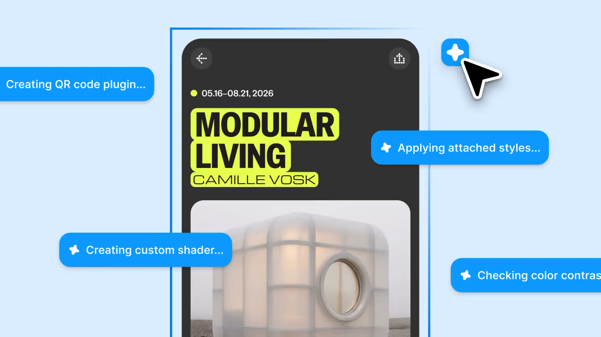
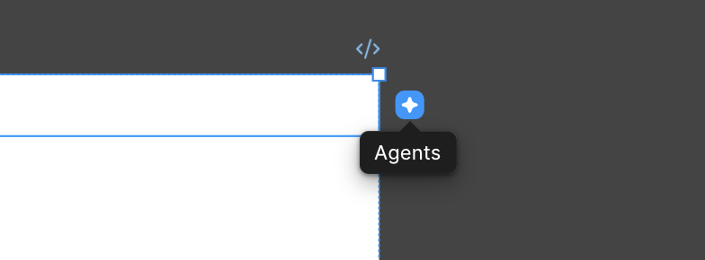
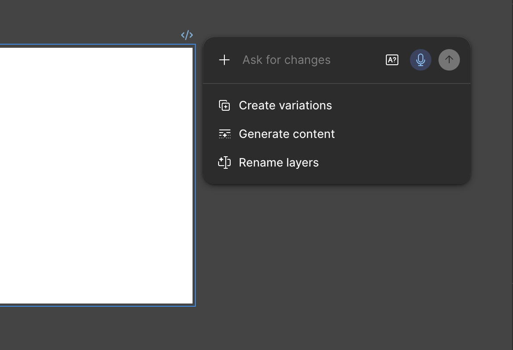
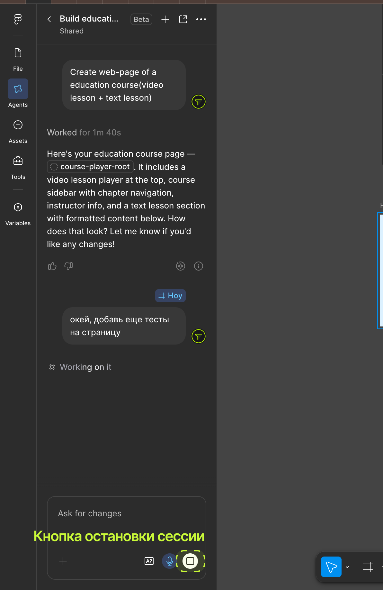
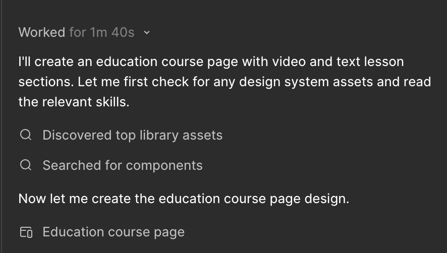

Figma Agent — принципиально другой класс инструмента: это не разовая генерация, а агент, который выполняет многошаговую задачу самостоятельно, итеративно, опираясь на инструкции и контекст макета, — как если бы вы делегировали задачу младшему коллеге и объяснили её словами, а не выполняли сами клик за кликом.

Разовая генерация работает так: вы формулируете запрос, инструмент выдаёт результат, вы оцениваете и, если нужно, переформулируете запрос заново.
Агент работает иначе: вы формулируете задачу целиком («приведи все отступы в этом макете к шкале 8px», «замени все инстансы старой кнопки на новую версию по всему файлу»), а дальше агент сам разбивает эту задачу на шаги, выполняет их последовательно и может сверяться с промежуточным результатом по ходу работы, не переспрашивая вас на каждом шаге.
Это принципиально ближе к тому, как работает делегирование в реальной команде, чем к разовому «нарисуй мне картинку по описанию».
Когда вы даёте агенту задачу, он обычно:
Анализирует текущее состояние макета — какие компоненты, стили, слои уже есть.
Разбивает задачу на подзадачи — например, для «привести отступы к шкале» это может быть: найти все нестандартные значения → сопоставить с ближайшим значением шкалы → применить изменения по каждому слою.
Выполняет подзадачи последовательно, показывая прогресс.
Отчитывается о результате — что было изменено и, иногда, что не удалось сделать однозначно (например, значение отступа, равноудалённое от двух соседних шагов шкалы).
Для редактора важно видеть не только финальный результат, но и сам список шагов — это даёт возможность остановить агента на середине, если он пошёл не туда, чего нет в разовой генерации, где приходится ждать полный результат, чтобы его оценить.
Ключевая техническая разница — агент удерживает контекст всей задачи между шагами, а не обрабатывает каждый запрос изолированно. Если на первом шаге агент определил, что в макете используется шкала отступов 4/8, он применяет это же понимание на всех последующих шагах, а не переопределяет заново каждый раз. Это похоже на то, как редактор, работающий над большим документом, помнит принятые ранее решения по терминологии и не меняет их посреди текста без причины.
Типичные сценарии использования редактором
Точечное исправление макета: выделите элемент и справа вверху, немного за границами объекта появится кнопочка Агента:

При нажатии открывается чат, куда можно писать что угодно, что нужно сделать с этим объектом, также есть пресеты, типа «Предложи еще варианты», «Заполни генеративным контентом», «Переименуй слои».

Дальше можно играться как душе угодно и припахивать агента такими задачками:
Массовая правка текста по правилу. «Замени во всех текстовых слоях этого макета обращение на "вы" вместо "ты"» — задача, требующая пройти по всему файлу, а не по одному экрану.
Приведение к системе. «Проверь все отступы в этом разделе макета и приведи к нашей шкале 4/8/16/24/32»
Массовая замена компонентов. «Замени все инстансы старой версии кнопки на новую по всему файлу» — расширение функции swap, но не вручную по одному инстансу, а сразу по всему файлу.
Аудит консистентности. «Найди все текстовые слои, которые не используют ни один из стилей текста нашей библиотеки, и перечисли их» — практическое продолжение аудита из урока 29.
Как контролировать процесс и не потерять управление

Формулируйте задачу максимально однозначно — «приведи отступы к шкале» без указания самой шкалы агент может интерпретировать по-своему.
Начинайте с небольшого, обратимого фрагмента, а не сразу со всего файла — проверьте результат на одной странице, прежде чем запускать на весь проект.
Используйте Version history перед запуском агента на важном файле — это создаёт точку отката, если результат окажется неожиданным.
Просматривайте лог шагов, а не только финальный результат — иногда агент принимает разумное на вид, но неверное по факту решение на промежуточном шаге, которое стоит поймать раньше, чем оно повлияет на все последующие шаги. Это можно глянуть разворачия ссылки в списках:

Ограничения и риски агентного режима
Неоднозначные инструкции дают неоднозначный результат — агент не может «догадаться», что вы имели в виду, если формулировка допускает разные толкования.
Массовые изменения масштабируют и ошибки. Если задача сформулирована немного неточно, агент применит эту неточность последовательно по всему файлу — в отличие от ручной правки, где ошибка обычно локальна.
Агент не заменяет решение о смысле, только выполнение по инструкции — какую именно шкалу отступов использовать, какой текст правильный — решает редактор, а не агент.
ПРАКТИКА — ставим агенту многошаговую задачу и разбираем результат
- Выберите макет из вашего учебного макета.
- Сохраните точку в Version history перед запуском.
- Сформулируйте агенту задачу (например, приведение отступов к другой шкале) максимально однозначно, включая конкретные значения шкалы.
- Запустите и просмотрите лог шагов, не дожидаясь пассивно только финального результата.
- Сверьте итог с исходным состоянием через Version history — что изменилось, совпадает ли с ожиданием.
Домашнее задание:
- Поставьте Figma Agent многошаговую задачу на небольшом фрагменте вашего учебного макета (по образцу практики).
- Сохраните точку версии до запуска и сравните результат после — что реально изменилось.
- Опишите текстом один сценарий из вашей будущей работы, где агентный режим сэкономил бы больше времени, чем разовая генерация, и почему.